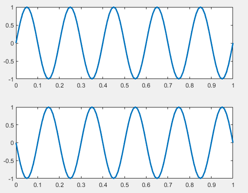
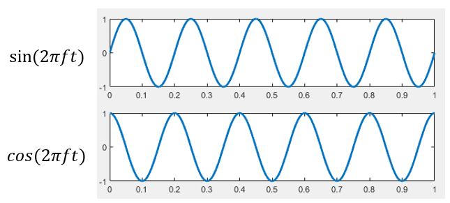
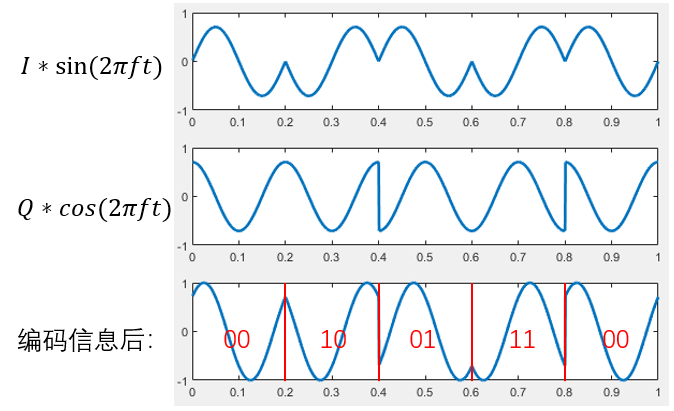
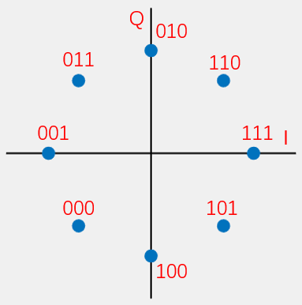
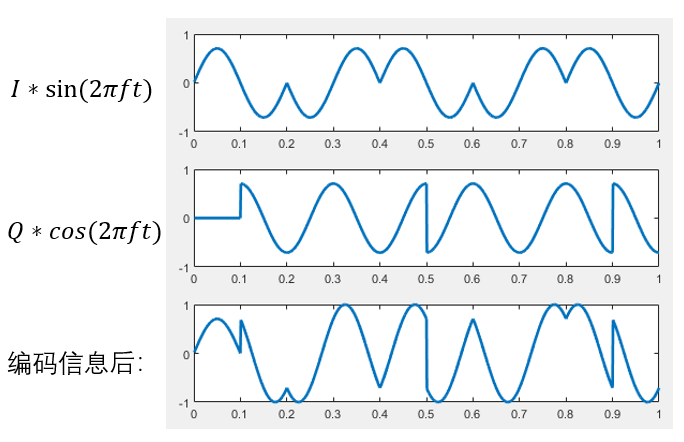

相位编码¶
前面我们介绍了幅度编码和频率编码，观察下图中的正弦函数公式，我们发现正弦信号除了幅度和频率特征，还有相位特征。本章节中，我们将介绍相位编码方法，也就是PSK（Phase shift keying）。

BPSK¶
相位编码，就是使用不同相位的信号来代表不同信息的编码方式。我们首先来看最简单的BPSK(Binary Phase Shift Keying),使用两种相位的信号来编码信息。为了使相位的区分度更高，我们使用相位相差为\pi的两种信号：

有了基础的带有相位信息的信号，我们就可以根据输入的待编码的信息来选择不同相位的信号。当输入为0时，我们选择相位为0的信号，当输入为1时，我们选择相位为\pi的信号。输入信号和对应的生成的BPSK调制过的信号如下图所示。

这种实现BPSK的方法叫做“键控”方法。此时数据和相位之间的映射关系是：
| 数据 | 相位 |
|---|---|
| 0 | 0 |
| 1 | \pi |
其星座映射图为：

QPSK¶
目前普遍使用的实现PSK的方法是IQ正交调制。其原理是使用两路正交的信号分别编码两路数据，每路数据单独调制，并将两路信号直接相加。正交的两路信号通常选用sin(2\pi ft)和cos(2\pi ft)。

用i和q分别代表两路待调制的数据，使用IQ调制后的信号为：
此时数据和相位之间的映射关系是：
| 数据 | I | Q | s(t) | 相位 |
|---|---|---|---|---|
| 00 | 1 | 1 | sin(2\pi ft) + cos(2\pi ft) = \sqrt{2}sin(2\pi ft+\frac{\pi}{4}) | \frac{\pi}{4} |
| 01 | 1 | -1 | sin(2\pi ft) - cos(2\pi ft) = \sqrt{2}sin(2\pi ft+\frac{7 \pi}{4}) | \frac{7 \pi}{4} |
| 10 | -1 | 1 | -sin(2\pi ft) + cos(2\pi ft) = \sqrt{2}sin(2\pi ft+\frac{3 \pi}{4}) | \frac{3 \pi}{4} |
| 11 | -1 | -1 | -sin(2\pi ft) - cos(2\pi ft) = \sqrt{2}sin(2\pi ft+\frac{5 \pi}{4}) | \frac{5 \pi}{4} |
其星座映射图为：

我们可以看到这里一共用到了四种相位来编码数据，这就是QPSK(Quadrature Phase Shift Keying)
为了使输出信号s(t)的振幅为1，我们需要对I和Q信号除以\sqrt{2}，因此，数据和I,Q对应关系应该是如下表所示：
| 数据 | I | Q |
|---|---|---|
| 00 | \frac{ \sqrt{2} }{2} | \frac{ \sqrt{2} }{2} |
| 01 | \frac{ \sqrt{2} }{2} | -\frac{ \sqrt{2} }{2} |
| 10 | -\frac{ \sqrt{2} }{2} | \frac{ \sqrt{2} }{2} |
| 11 | -\frac{ \sqrt{2} }{2} | -\frac{ \sqrt{2} }{2} |
下图展示了I、Q基带信号、分别调制了信息的两路信号以及叠加后的信号。图中对应的I路和Q路数据分别是：I= \{\frac{ \sqrt{2} }{2},-\frac{ \sqrt{2} }{2},\frac{ \sqrt{2} }{2},-\frac{ \sqrt{2} }{2},\frac{ \sqrt{2} }{2}\},Q = \{ \frac{ \sqrt{2} }{2},\frac{ \sqrt{2} }{2},-\frac{ \sqrt{2} }{2},-\frac{ \sqrt{2} }{2},\frac{ \sqrt{2} }{2}\}

在解码时，利用其正交特性，分别对两路信号进行积分运算，得到每路信号中编码的数据。 解码I路信号：
对Q路信号的解码与之同理，这里就不进行重复展示了。 IQ调制的方法不仅可以实现4中相位的QPSK，还可以支持更多相位来实现更高的数据速率。当我们把QPSK的星座映射图中的坐标轴上也加上数据点，就可以得到8PSK的星座映射图：

为了使叠加的信号的相位满足星座映射图，数据和IQ之间的映射应该为：
| 数据 | I | Q |
|---|---|---|
| 000 | -\frac{ \sqrt{2} }{2} | -\frac{ \sqrt{2} }{2} |
| 001 | -1 | 0 |
| 010 | 0 | 1 |
| 011 | -\frac{ \sqrt{2} }{2} | \frac{ \sqrt{2} }{2} |
| ... |
当我们继续在星座映射图中增加数据点，就可以获得数据速率更高的相位编码方式，比如说下图中的16-QAM、32-QAM和64-QAM

OQPSK¶
观察QPSK的星座映射图，我们可以发现从00 到 11 和从10 到01之间的相位转变都是\pi。当信号通过低通滤波器时，大的相位翻转会导致大的幅值幅波动，如下图中红圈部分所示：

这种大的相位翻转会影响解码的成功率。我们可以使用OQPSK(Offset QPSK)来解决这个问题。 OQPSK方法是基于QPSK的IQ调制方式，I路信号和QPSK相同，Q路数据向后错位半个周期。这样一来I路和Q路信号翻转的位置相差半个周期，也就是说I路数据和Q路数据不会出现同时的翻转，信号相位最大只能变化\frac{\pi}{2}。 下图分别展示了OQPSK的I、Q基带信号、分别调制了信息的两路信号以及叠加后的信号。

在声音信号上实现OQPSK¶
OQPSK编码¶
OQPSK解码¶
载波调制¶
载波调制的原理是将低频的基带信号通过上变频搬移到较高频率的载波上进行传输。接收端接收到信号后首先利用下变频将信号搬移到基带信号频率上。 下图展示的是把基带信号上变频到频率为fc的载波后进行传输，在接收端进行下变频、使用滤波器滤掉高频信号获得基带信号的过程。

接下来我们用公式来推导这个过程。 基带信号为
载波频率为f_c,将基带信号搬移到载波上：
接收端收到后对其进行下变频。
OFDM编码¶
上变频 下变频